1. Saved runs
Five seed-42 runs share a 54,000/6,000/10,000 training/validation/test split and 16-epoch budget. Validation macro-F1 selects best.pt; checkpoint.pt retains the final epoch. All comparisons below use the selected weights.
| Model | Seed | Run folder |
|---|---|---|
| Linear | 42 | Linear_seed42_20260921_102802_939301 |
| MLP | 42 | MLP_seed42_20260921_102809_962296 |
| CNN | 42 | CNN_seed42_20260921_102822_896256 |
| LSTM | 42 | LSTM_seed42_20260921_102029_281098 |
| Transformer | 42 | Transformer_seed42_20260921_102142_951597 |
2. Validation comparison
Accuracy and macro-F1 use the same selected checkpoint. The accuracy gap is training minus validation accuracy in percentage points, measured with those fixed weights.
| Model | Accuracy (0–1) | Macro-F1 | Selected epoch | Epochs run | Train–val gap (pp) |
|---|---|---|---|---|---|
| Linear | 0.8653 | 0.8658 | 12 | 16 | 0.2944 |
| MLP | 0.9068 | 0.9070 | 14 | 16 | 3.9111 |
| CNN | 0.9227 | 0.9233 | 14 | 16 | 2.9037 |
| LSTM | 0.9008 | 0.9007 | 16 | 16 | 0.8778 |
| Transformer | 0.8837 | 0.8830 | 16 | 16 | 0.8241 |
CNN has the highest validation macro-F1, 0.9233, and is selected at epoch 14. Its validation accuracy is 92.27%, compared with 90.68% for MLP and 86.53% for Linear. The MLP improves validation accuracy by 4.15 percentage points over the linear baseline.
At the selected weights, the training-minus-validation accuracy gap is 3.91 points for MLP and 2.90 for CNN. LSTM and Transformer have smaller gaps, 0.88 and 0.82 points, but also lower validation scores; a small gap alone does not identify the strongest model. Linear's gap is 0.29 points on this split.
| Model | Parameters | Training (s) | Validation ms per image | Test ms per image |
|---|---|---|---|---|
| Linear | 7850 | 5.9364 | 0.0023 | 0.0019 |
| MLP | 203530 | 11.8839 | 0.0028 | 0.0024 |
| CNN | 105866 | 151.3040 | 0.0360 | 0.0346 |
| LSTM | 24714 | 70.1982 | 0.0379 | 0.0372 |
| Transformer | 19530 | 137.8495 | 0.0697 | 0.0720 |
Linear is smallest at 7,850 parameters. CNN has 105,866 parameters, about 52% of MLP's 203,530, but its measured test inference takes 0.0346 ms/image, versus 0.0024 ms/image for MLP. Shared convolution weights reduce parameter count without eliminating repeated spatial computation. LSTM and Transformer are smaller still, yet their recurrent and attention operations cost more than MLP inference here.
Training and inference ran sequentially on CPU with four PyTorch threads. Fit times in model order are Linear 5.94 s, MLP 11.88 s, CNN 151.30 s, LSTM 70.20 s and Transformer 137.85 s. Every model completed 16 epochs. Fit time includes validation and checkpoint work as well as parameter updates.
Inference uses one warm-up pass followed by the median of three complete passes, including batching, forward computation and argmax, excluding metric calculation. These are batched throughput times per image, not single-image request latency. One training seed and one completed fit per model do not establish runtime variability.
3. Held-out test results
The official test set evaluates the validation-selected checkpoints.
| Model | Loss | Accuracy (0–1) | Macro-F1 | Inference (ms/image) |
|---|---|---|---|---|
| Linear | 0.4438 | 0.8403 | 0.8408 | 0.0019 |
| MLP | 0.3505 | 0.8877 | 0.8878 | 0.0024 |
| CNN | 0.2638 | 0.9105 | 0.9108 | 0.0346 |
| LSTM | 0.3274 | 0.8821 | 0.8819 | 0.0372 |
| Transformer | 0.3555 | 0.8689 | 0.8680 | 0.0720 |
The validation-selected CNN reaches 91.05% test accuracy and 0.9108 macro-F1, below its validation accuracy by 1.22 percentage points. The test accuracies are Linear 84.03%, MLP 88.77%, CNN 91.05%, LSTM 88.21% and Transformer 86.89%.
MLP improves over Linear by 4.74 percentage points; CNN adds 2.28 points over MLP. The validation and test rankings agree in this run. These are results for these implementations and one training seed, not a universal ranking of architecture families.
4. Learning curves
Dashed lines show training metrics during updates; solid lines show validation after each epoch. Vertical lines mark the selected checkpoints.
| Model | Run folder |
|---|---|
| Linear | Linear_seed42_20260921_102802_939301 |
| MLP | MLP_seed42_20260921_102809_962296 |
| CNN | CNN_seed42_20260921_102822_896256 |
| LSTM | LSTM_seed42_20260921_102029_281098 |
| Transformer | Transformer_seed42_20260921_102142_951597 |


{kind=link}
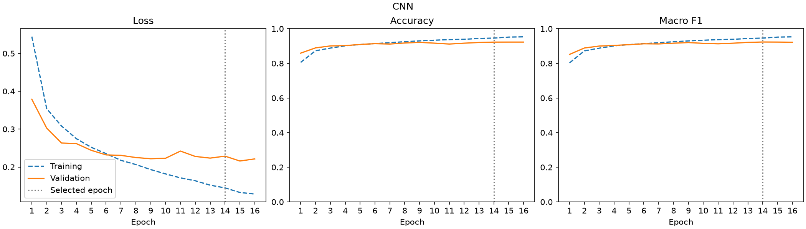
{kind=link}
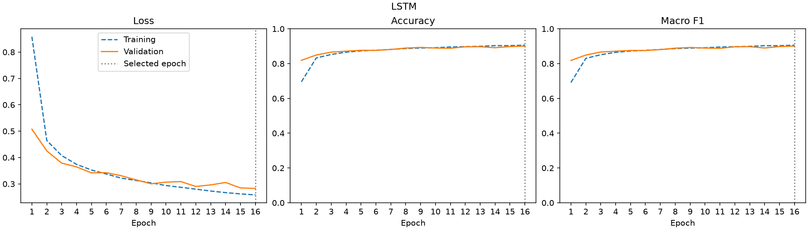
{kind=link}
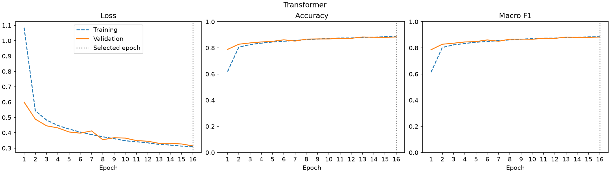
All models complete 16 epochs. Linear selects epoch 12: validation macro-F1 is 0.8658 there and 0.8577 at epoch 16, while validation loss rises from 0.3886 to 0.4003. MLP selects epoch 14; its training loss continues falling while validation loss rises from 0.2845 to 0.2897 by epoch 16. The later weights are not necessarily the better generalizing weights.
CNN also selects epoch 14 even though epoch 16 has slightly lower validation loss and higher accuracy: its macro-F1 falls from 0.9233 to 0.9219. LSTM and Transformer select epoch 16. For Linear, MLP and CNN, best.pt and the final checkpoint.pt therefore contain weights from different epochs. Evaluation uses the former. Dashed training curves are collected during updates and differ from the fixed-checkpoint training metrics above.
4.1 Validation images
The table counts correct predictions across all 6,000 validation images. The gallery shows the first 16 for CNN: green titles mark correct predictions, red titles mark errors. IDs refer to the original training file.
| Model | Correct | Total | Accuracy (0–1) |
|---|---|---|---|
| Linear | 5192 | 6000 | 0.8653 |
| MLP | 5441 | 6000 | 0.9068 |
| CNN | 5536 | 6000 | 0.9227 |
| LSTM | 5405 | 6000 | 0.9008 |
| Transformer | 5302 | 6000 | 0.8837 |
{kind=link}
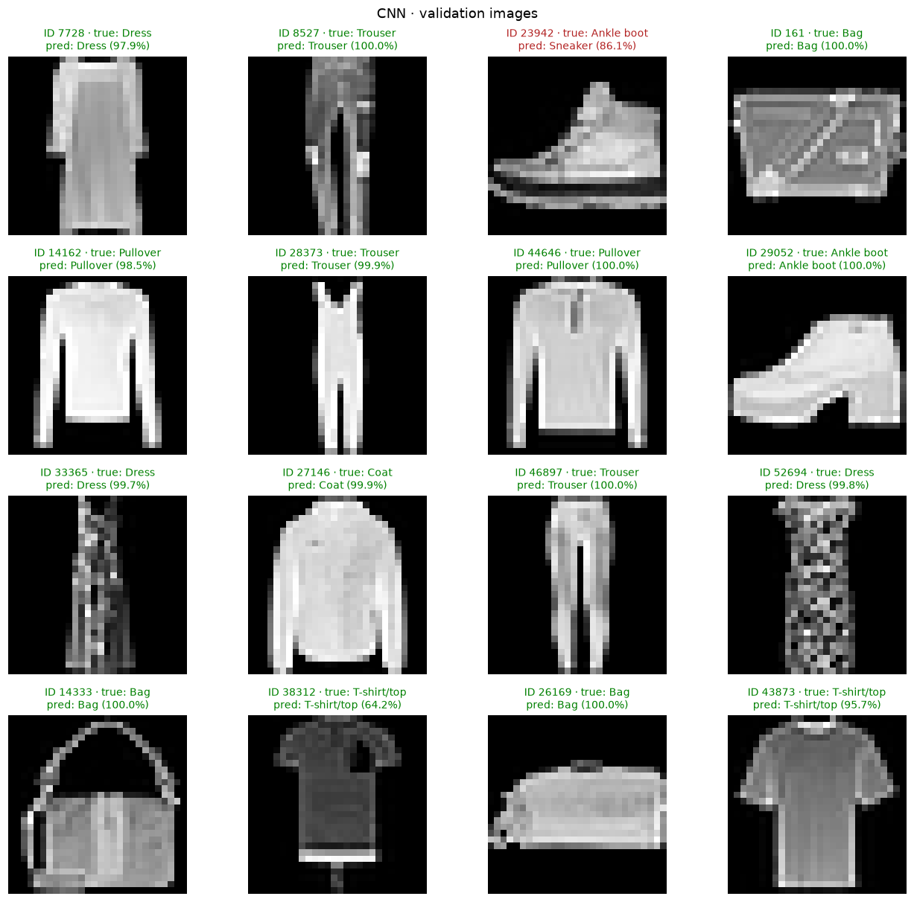
The displayed CNN page contains 15 correct predictions out of 16. Ankle boot #23942 is predicted as Sneaker with 86.1% confidence, illustrating a confident footwear error even on this mostly correct page. File order determines the examples shown; the table above uses all 6,000 predictions per model and gives CNN 5,536 correct (92.27%).
5. Training-seed variability
Each model has one evaluated training seed. These runs do not establish training-seed variability or statistical significance.
6. Test confusion matrices
Rows are true classes; columns are predictions. Cell counts show how often each decision occurs. Compare clothing confusions with the visual similarities observed in EDA.


{kind=link}
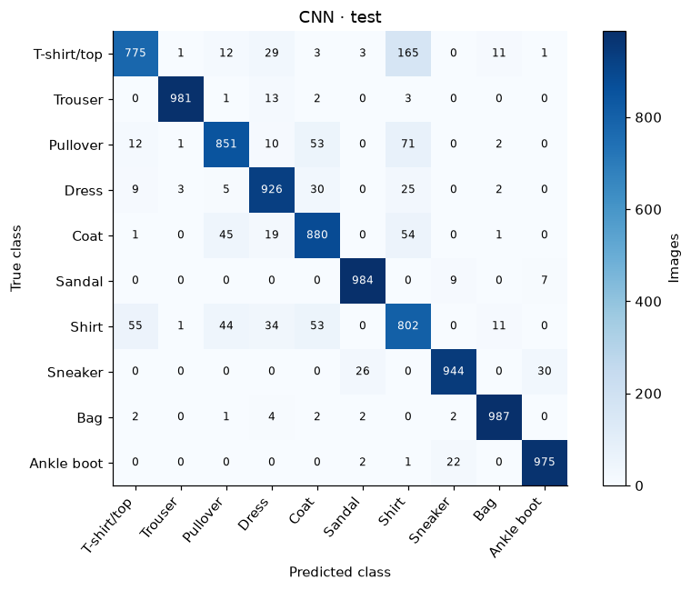
{kind=link}
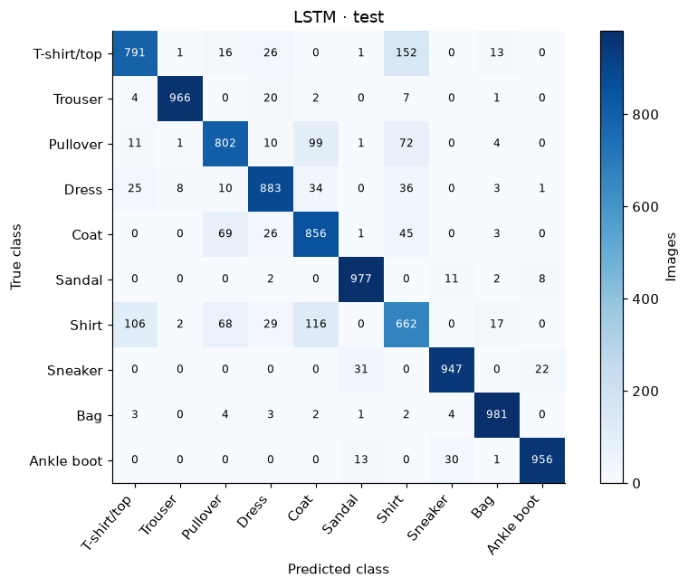
{kind=link}
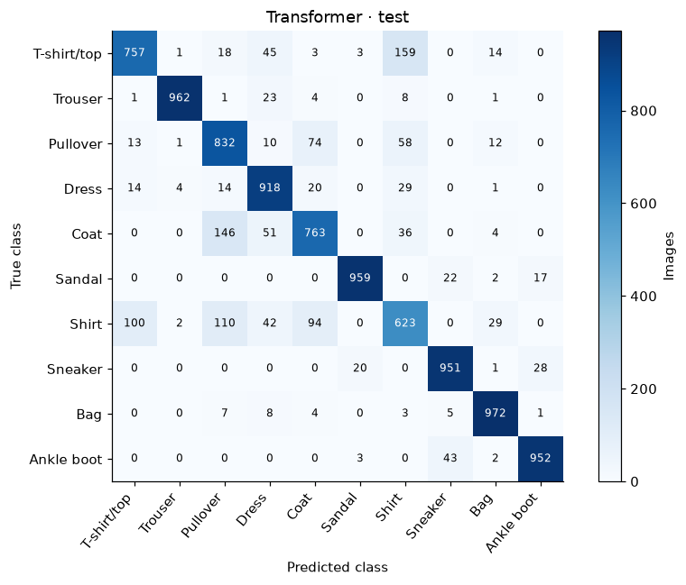
All five models make substantial mistakes among T-shirt/top, Shirt, Pullover and Coat. This supports the EDA hypothesis that similar upper-body silhouettes create ambiguity. CNN reduces Pullover → Coat errors from Linear's 130 to 53, but its largest error is T-shirt/top → Shirt, with 165 cases. Better overall performance does not improve every class pair: MLP makes 135 errors in that direction.
Each true class contains 1,000 test images, so the displayed counts also convert directly to within-class percentages by dividing by ten. Shirt can attract many false positives even when true shirts are recognized correctly.
| Class / model | Linear | Mlp | Cnn | Lstm | Transformer |
|---|---|---|---|---|---|
| T-shirt/top | 0.797 | 0.832 | 0.836 | 0.815 | 0.803 |
| Trouser | 0.967 | 0.982 | 0.987 | 0.977 | 0.977 |
| Pullover | 0.731 | 0.811 | 0.869 | 0.815 | 0.782 |
| Dress | 0.851 | 0.900 | 0.910 | 0.883 | 0.876 |
| Coat | 0.746 | 0.806 | 0.870 | 0.812 | 0.778 |
| Sandal | 0.928 | 0.960 | 0.976 | 0.965 | 0.966 |
| Shirt | 0.589 | 0.710 | 0.756 | 0.670 | 0.650 |
| Sneaker | 0.919 | 0.950 | 0.955 | 0.951 | 0.941 |
| Bag | 0.937 | 0.965 | 0.980 | 0.969 | 0.954 |
| Ankle boot | 0.941 | 0.963 | 0.969 | 0.962 | 0.953 |
{kind=link}
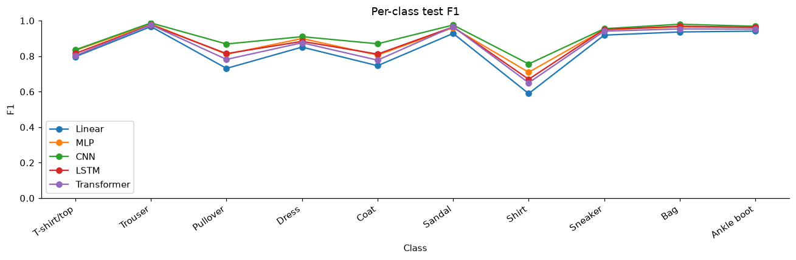
Shirt is the weakest class for every model: F1 ranges from 0.589 for Linear to 0.756 for CNN. CNN's Trouser F1 is 0.987 and Bag F1 is 0.980, showing how much the difficulty varies despite equal class counts. CNN improves Shirt F1 over MLP's 0.710, but substantial overlap among upper-body garments remains. Macro-F1 retains that weak class's contribution instead of reporting only the overall success rate.
| Model | True | Predicted | Count | Class error rate |
|---|---|---|---|---|
| Linear | T-shirt/top | Shirt | 147 | 0.147 |
| Linear | Pullover | Coat | 130 | 0.130 |
| Linear | Shirt | T-shirt/top | 121 | 0.121 |
| Linear | Shirt | Pullover | 119 | 0.119 |
| Linear | Shirt | Coat | 114 | 0.114 |
| MLP | T-shirt/top | Shirt | 135 | 0.135 |
| MLP | Shirt | T-shirt/top | 97 | 0.097 |
| MLP | Coat | Pullover | 90 | 0.090 |
| MLP | Pullover | Coat | 80 | 0.080 |
| MLP | Shirt | Pullover | 78 | 0.078 |
| CNN | T-shirt/top | Shirt | 165 | 0.165 |
| CNN | Pullover | Shirt | 71 | 0.071 |
| CNN | Shirt | T-shirt/top | 55 | 0.055 |
| CNN | Coat | Shirt | 54 | 0.054 |
| CNN | Pullover | Coat | 53 | 0.053 |
| LSTM | T-shirt/top | Shirt | 152 | 0.152 |
| LSTM | Shirt | Coat | 116 | 0.116 |
| LSTM | Shirt | T-shirt/top | 106 | 0.106 |
| LSTM | Pullover | Coat | 99 | 0.099 |
| LSTM | Pullover | Shirt | 72 | 0.072 |
| Transformer | T-shirt/top | Shirt | 159 | 0.159 |
| Transformer | Coat | Pullover | 146 | 0.146 |
| Transformer | Shirt | Pullover | 110 | 0.110 |
| Transformer | Shirt | T-shirt/top | 100 | 0.100 |
| Transformer | Shirt | Coat | 94 | 0.094 |
CNN's five most frequent directional errors are T-shirt/top → Shirt (165; 16.5% of true T-shirts), Pullover → Shirt (71), Shirt → T-shirt/top (55), Coat → Shirt (54) and Pullover → Coat (53). Four of these five involve Shirt. The reverse Shirt → T-shirt/top direction is much less frequent than T-shirt/top → Shirt, so treating the pair as a symmetric error would hide useful information.
7. Inspect predictions
For each model, show four correct predictions in test-file order, four lowest-confidence correct predictions, and four incorrect predictions in test-file order. Confidence is the largest softmax probability; it is not a calibrated guarantee. IDs refer to the official test image file.


{kind=link}
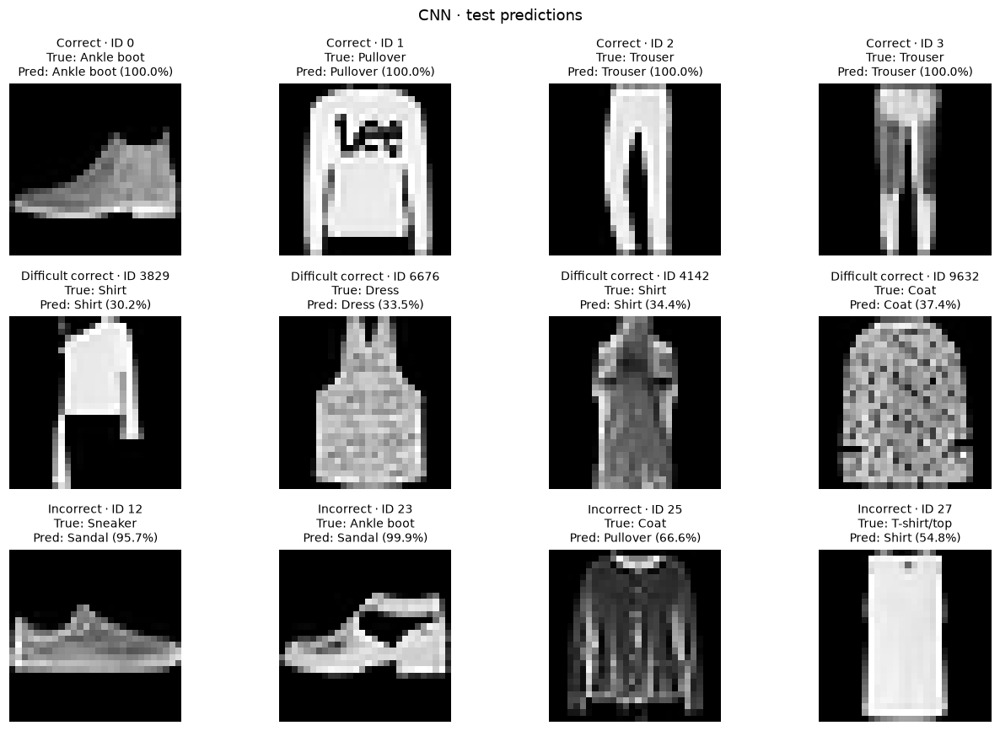
{kind=link}
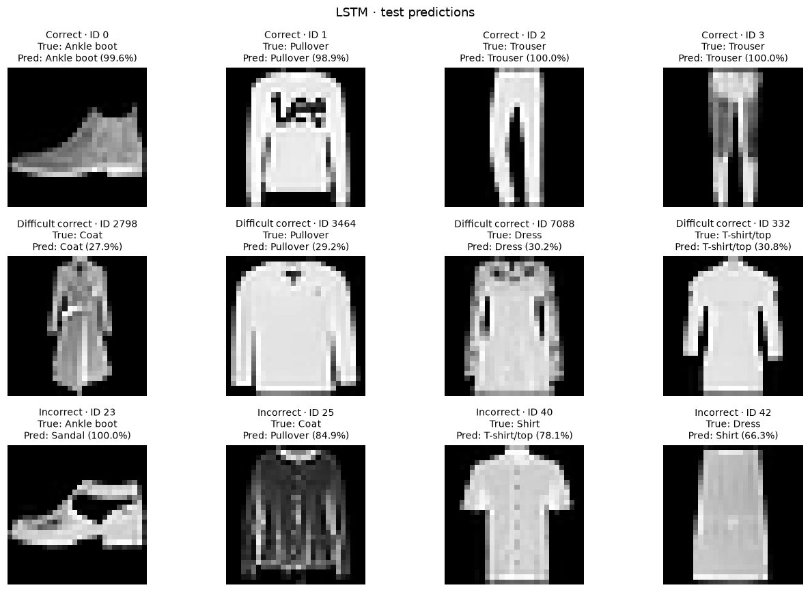
{kind=link}
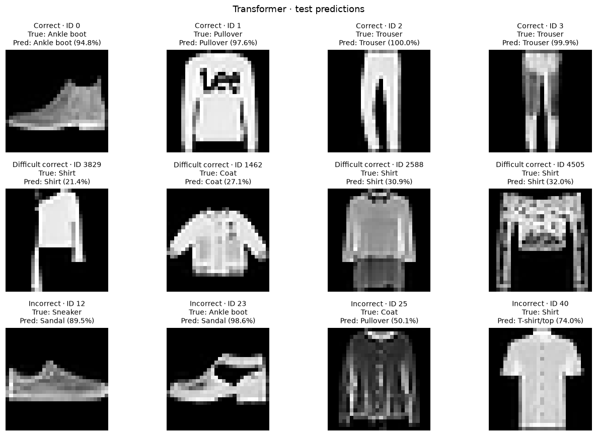
CNN correctly recognizes the first boot, printed pullover and two trousers, whose broad silhouettes are visible. Its low-confidence correct cases include Shirt #3829 at 30.2% and Dress #6676 at 33.5%; the pictured garments have unusual or indistinct outlines. They show that a correct class can win with low confidence.
CNN misclassifies Sneaker #12 as Sandal at 95.7% and Ankle boot #23 as Sandal at 99.9%. The latter image has a heel and large dark opening, giving it features that resemble a sandal despite its supplied label. Transformer makes the same two footwear mistakes, at 89.5% and 98.6%. CNN also labels dark Coat #25 as Pullover and sleeveless T-shirt #27 as Shirt. These examples illustrate visual ambiguity without establishing that the dataset labels are wrong.
Transformer's lowest-confidence correct example is the same asymmetric Shirt #3829, at 21.4%. Its difficult group also contains Coat #1462 at 27.1%, a short garment with a front opening, and two other shirts. All four are upper-body garments with features shared across categories. Softmax confidence can be high on mistakes and low on correct decisions. The first four errors are a deterministic inspection sample, not a representative estimate of the overall error distribution.
8. Discussion
The 256-unit MLP adds nonlinear features to the flattened 784-pixel representation and improves test accuracy from 84.03% to 88.77% over Linear. Both lose explicit two-dimensional neighborhood structure, but the MLP can combine pixels nonlinearly. The models also differ in parameter count and computation, so the comparison does not isolate nonlinearity as the sole cause of the gain.
CNN is the validation-selected candidate. Its local 3 × 3 filters and pooling exploit spatial structure, reaching 91.05% test accuracy and 0.9108 macro-F1. Against MLP it gains 2.28 accuracy points with roughly half as many parameters, at about 14 times the measured batched CPU inference time per image. CNN is the stronger accuracy choice here; MLP offers a useful inference-cost trade-off. The sequential fit takes 151.30 s for CNN versus 11.88 s for MLP over the same 16-epoch budget; inference and training costs should be assessed separately.
LSTM reads 28 image rows sequentially and summarizes them in a final hidden state. It reaches 88.21% test accuracy with 24,714 parameters, but is slower at inference than MLP and reaches its best validation result only at the 16-epoch limit. Transformer attends over 49 patches of 4 × 4 pixels with learned positions, reaching 86.89% with 19,530 parameters. These compact sequence models have different spatial assumptions and optimization needs; their current scores do not show that sequence models cannot learn images or that more training must improve them.
The persistent limitation is upper-body clothing ambiguity. Shirt remains CNN's weakest class, and 165 true T-shirts are predicted as shirts. The inspected footwear mistakes also show that high softmax confidence does not guarantee a correct label. This links the result analysis back to EDA's overlapping silhouettes while keeping descriptive image similarity separate from measured classification errors.
First repeat the unchanged setup with additional seeds. Then use training and validation to test a longer LSTM training budget and modest image shifts or weight decay for the nonlinear models. These are proposed experiments, not measured improvements; their settings should not be chosen from test performance. The current comparison uses one split, one training seed and a fixed 16-epoch budget, with no architecture-specific tuning.